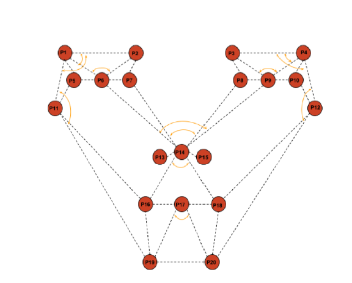
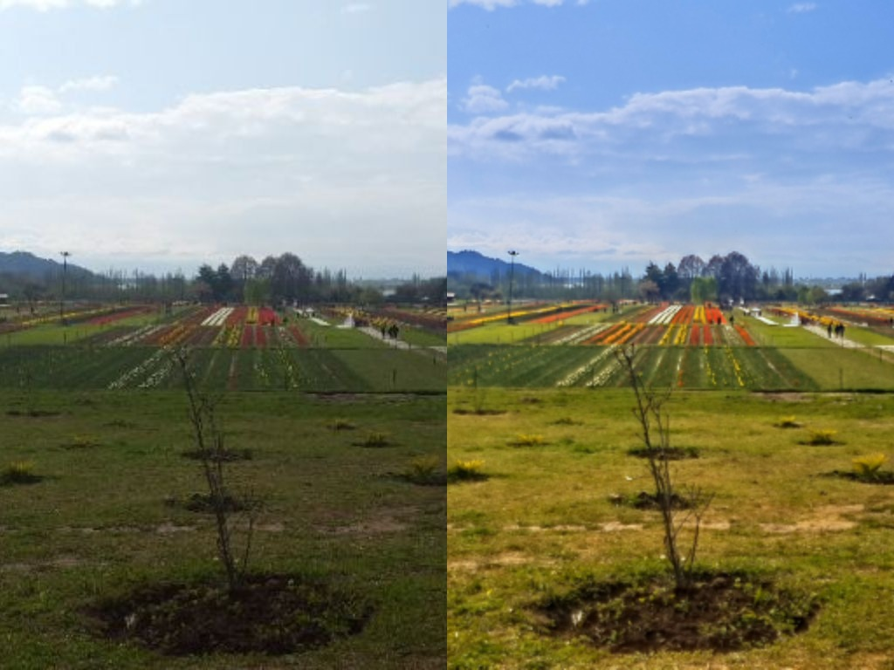
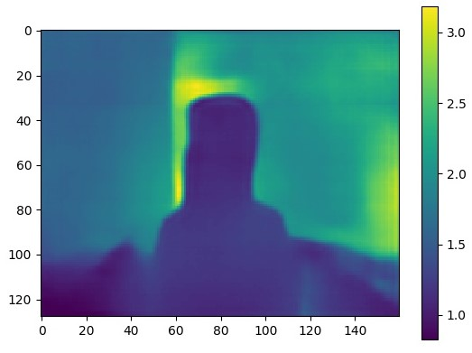
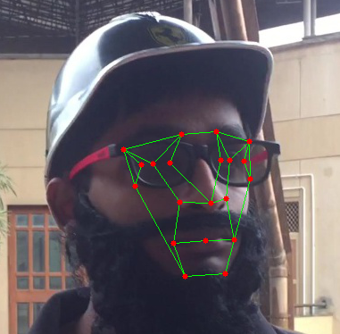
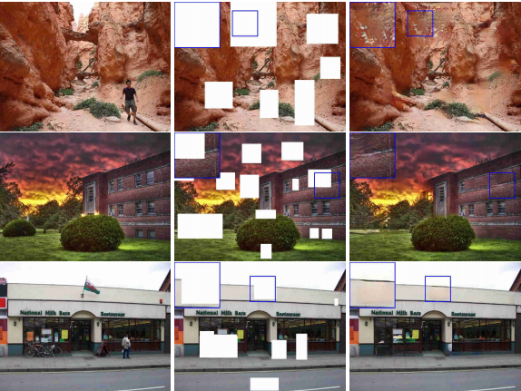
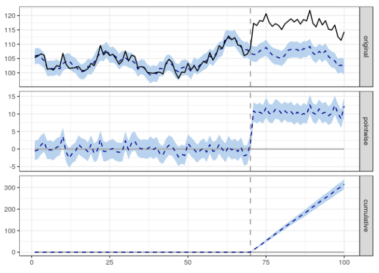

I am a Bachelor's student at the Department of Electronics & Communication Engineering at NIT Srinagar.
Currently, I'm working on Image Enhancement using GANs as my final year project under Prof. Ajaz H Mir, and Dr. Aamir Ahsan
Previously, I was a Research Intern at
Dr. S N Omkar's Lab at Indian Institute of Science, Bengaluru (Dec. 2017 - Feb. 2018).
Then I worked as a Research Intern at Froot AI based in Pune, India (May 2018 - Aug 2018).
I've also worked as a Data Science Intern at She Matters in Gurgaon (Dec. 2018 - Feb. 2019)
A Supervised Learning Methodology for Real-Time Disguised Face Recognition in the Wild
Saumya Kumaar, Abhinandan Dogra, Abrar Majeedi, Hanan Shafi, Ravi M. Vishwanath, S N Omkar
IEEE International Conference on Robotics and Computer Vision, 2018 arXiv

Disguised Facial Recognition using Neural Networks
Saumya Kumaar, Ravi M. Vishwanath, S N Omkar, Abrar Majeedi, Abhinandan Dogra IEEE International Conference on Signal and Image Processing, 2018 (Oral Presentation) IEEE
Projects

Image Enhancement using Generative Adversarial Networks Project Supervisor:Prof. AH Mir
Currently working on a generative model approach for image enhancement as my FYP.

Depth Map Estimation from single image using CNNs
Built a single-image depth-map estimation system as a part of Multimedia Systems course (ECE-605). NYU Depth dataset was used for training CNN. Results and code can be found here.

Disguised Face Recognition in the Wild
Developed a state-of-the-art novel algorithm for disguised face recognition in the wild using deep CNNs. Our image annotation tool can be found here. The code for entire pipeline from classification to real-time implementation can be found in this link.

Generative Image Inpainting with Contextual Attention
A PyTorch implementation of the paper: Generative Image Inpainting with Contextual Attention. Code can be found at this link.

Causality Detection / Policy Change Evaluation through Time-series Data
A causal inference framework for policy change evaluation on time-series data. Implementation can be found at this link.